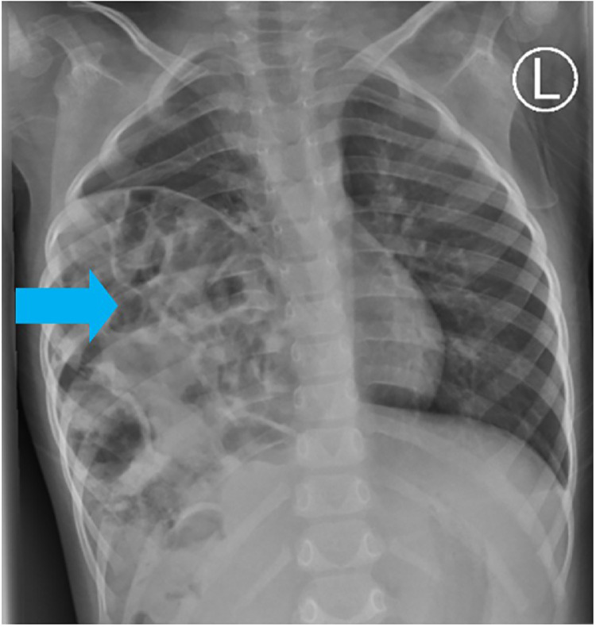

610 — Suy hô hấp sơ sinh: RDS, TTN, MAS & CDH / Neonatal distress
Tags: pattern:suy-ho-hap-so-sinh vung:phoi-nhi protocol:X-quang-so-sinh
Mức chắc chắn (certainty): tổng hợp y văn (literature synthesis) — nhóm tự biên từ y văn mở, chưa gắn ca nguyên văn đơn lẻ.
1. Tổng quan — thể tích phổi đọc trước, hạt-khí đọc sau
- Surfactant giảm sức căng phế nang — TẠI SAO non tháng (< 34 tuần) xẹp lan tỏa: thiếu surfactant → xẹp + thể tích thấp (< 7 cung sườn sau) + hạt kính mờ + phế quản hơi (RDS).
- Dịch phổi chậm hấp thu (mổ đẻ đủ tháng) — TẠI SAO TTN ứ khí + dịch rãnh liên thùy + Kerley B mà tự sạch 48–72 giờ: dịch chỉ kẹt tạm, không xẹp thật.
- Phân su gây tắc-van + viêm — TẠI SAO MAS vừa xẹp vừa ứ khí + tràn khí 20–40%: cục phân su chặn từng phần (van 1 chiều) + toàn phần xen kẽ.
- CDH Bochdalek trái 85%: ruột lên ngực qua khe sau-ngoài — CẤM bóp bóng mask (khí vào ruột chèn tim phổi!).
2. Gamut suy hô hấp sơ sinh (Gamut)
- Non tháng + xẹp + hạt + phế quản hơi: RDS — surfactant + CPAP/thở máy (coi chừng PIE).
- Đủ tháng mổ đẻ + ứ khí + Kerley + sạch 48–72h: TTN — oxy + theo dõi (đừng kháng sinh mù).
- Già tháng + phân su + đám thô + tràn khí: MAS — hút + thở máy + ECMO khi nặng.
- Ruột ngực trái + trung thất lệch + bụng lõm: CDH — nội khí quản + sonde dạ dày + mổ (cấm mask!).
3. Bảng so sánh phân biệt (ma trận đối chiếu)
| Thực thể (entity) | Hình ảnh điển hình | Chốt vào (rule-in) | Chốt loại (rule-out) | Gợi ý xác nhận |
|---|---|---|---|---|
| RDS | Xẹp < 7 sườn + hạt kính mờ + phế quản hơi | Non tháng + xẹp + hạt | Ứ khí + tan 48h → TTN | Surfactant + CPAP |
| TTN | Ứ khí + dịch rãnh + Kerley + sạch 48–72h | Mổ đẻ + tự sạch | Xẹp + hạt → RDS | Oxy + theo dõi |
| MAS | Căng > 9 sườn + đám thô + tràn khí 20–40% | Phân su + xẹp-ứ xen kẽ | Ruột ngực → CDH | Hút + máy + ECMO |
| CDH | Ruột ngực trái + lệch trung thất + bụng lõm | Quai ruột ngực + Bochdalek 85% trái | Nang phổi → CPAM | NKQ + sonde + mổ, cấm mask |

Đa quai ruột ngực phải — CDH muộn dễ nhầm viêm phổi/tràn khí. Nguồn: Lodhia et al., Radiol Case Rep 2024 Fig. 5, CC BY-NC-ND 4.0 (giữ nguyên bản).4. Protocol X-quang sơ sinh
- X-quang nằm + đếm cung sườn + sonde dạ dày (CDH: sonde cuộn trong ngực!); siêu âm phổi khi phân vân RDS/TTN.
flowchart TD
A[Suy hô hấp sơ sinh] --> B{Thể tích phổi?}
B -->|Thấp + hạt| C[RDS: surfactant]
B -->|Cao + tan 48h| D[TTN: theo dõi]
B -->|Ruột ngực| E[CDH: NKQ + mổ]
5. Cạm bẫy
- CDH muộn giả viêm phổi/tràn khí đặt dẫn lưu vào ruột! — quai ruột + bụng lõm là CT trước mọi dẫn lưu.
- Bóp bóng mask CDH = tử vong — NKQ + sonde là luật.
- TTN kháng sinh mù — sạch 48–72h + đủ tháng mổ đẻ là theo dõi.
6. Tự lượng giá — Blind Quiz
Ca 1 — Trẻ 2 tuổi ho khò khè tái diễn, kháng sinh không đỡ. Đọc X-quang.
- Hỏi: bóng gì trong ngực phải? CDH hay viêm phổi? Đặt dẫn lưu được không?
Bấm để hiện đáp án
- Dấu hiệu (findings): đa quai ruột nửa ngực phải (mũi tên xanh).
- Chẩn đoán (diagnosis): thoát vị hoành bẩm sinh muộn (CDH) — CT xác nhận + mổ (cấm dẫn lưu mù, cấm bóp mask!).
- Nguồn: Lodhia et al., Fig. 5, CC BY-NC-ND 4.0 (nguyên bản).
Ca 2 — Non 30 tuần + xẹp + hạt + phế quản hơi: RDS hay TTN? Thuốc gì? (Bảng mục 3.)
Bấm để hiện đáp án
- RDS: surfactant + CPAP (TTN là đủ tháng + tự sạch 48–72h).
Bài liên quan chéo
- 600 – Tổng quan Nhi
- 031 – Viêm phổi (người lớn)
- 045 – Hoành (Bochdalek)
Không dùng để chẩn đoán độc lập khi chưa có người hướng dẫn.